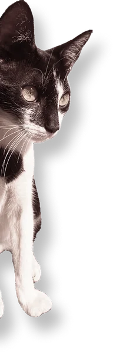
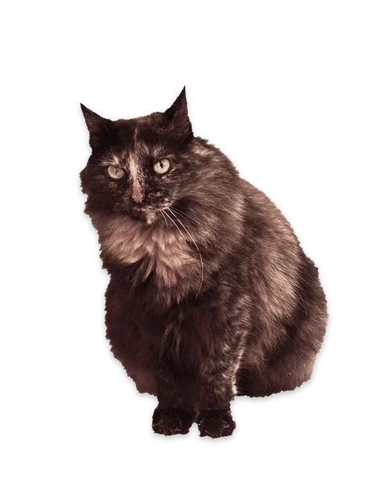
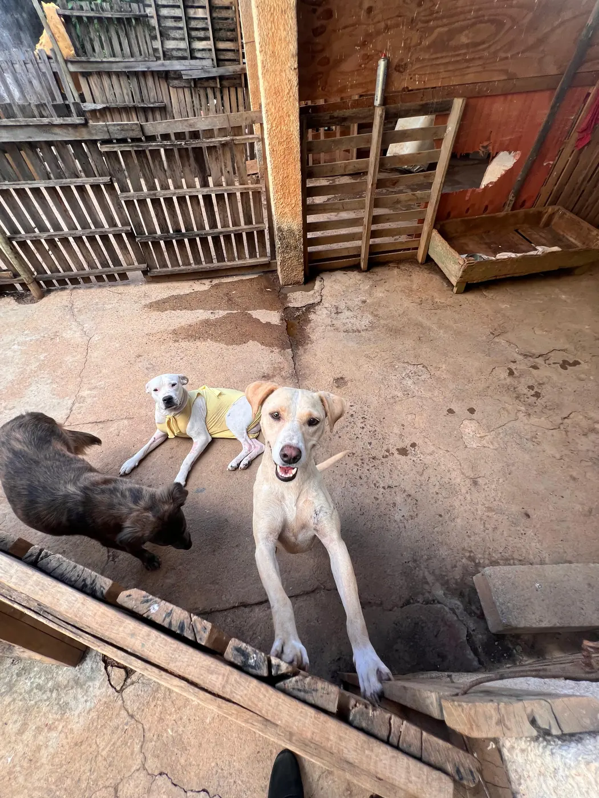
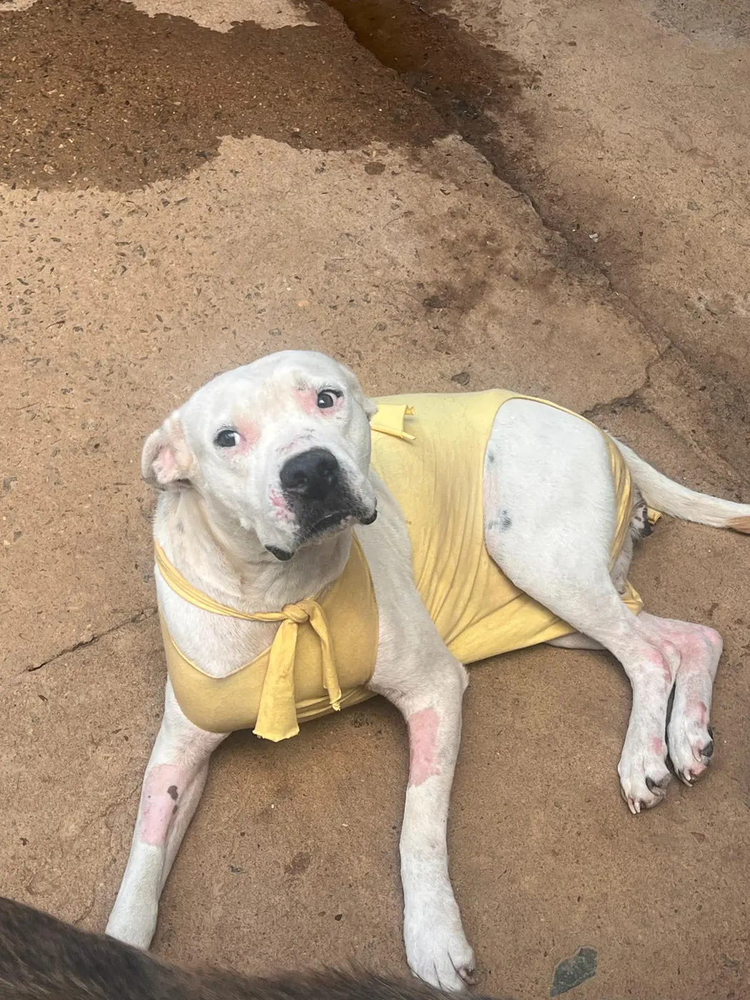
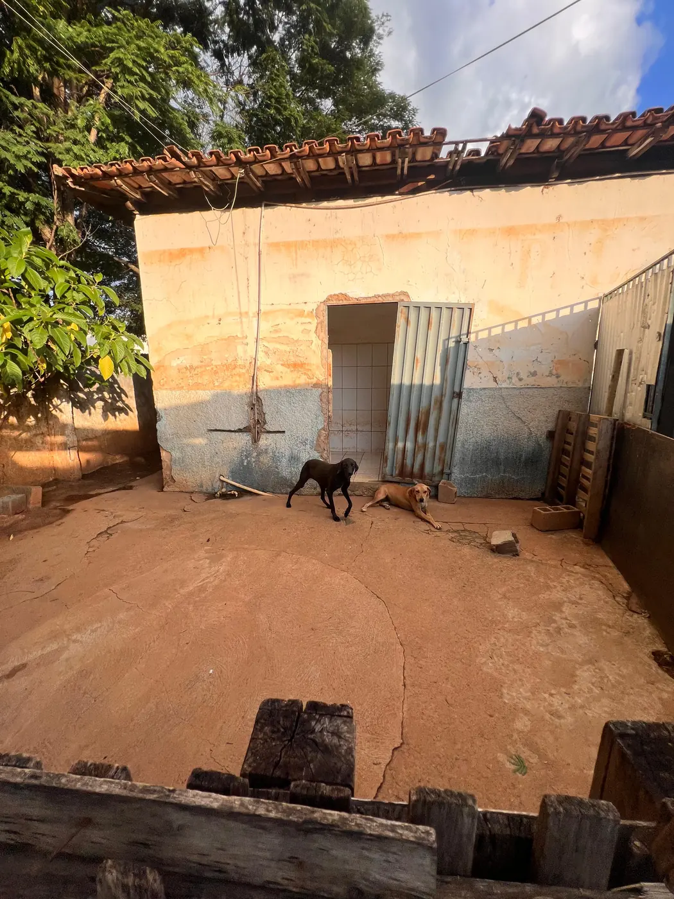
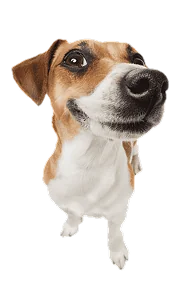
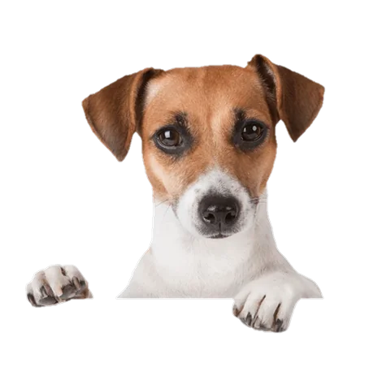

Proteção animal em Matipó - MG
Toda vida importa!
Resgatamos, tratamos e encontramos lares cheios de amor para cães e gatos que vivem nas ruas de Matipó. Cada ajuda vira ração, remédio e uma segunda chance.





Quem somos
Tudo começou com um pote de ração na calçada
A Anjos de Patas nasceu de um projeto idealizado pela Dra. Joice durante a graduação em Medicina Veterinária: comedouros comunitários espalhados por Matipó para que nenhum animal de rua passasse fome.
Com o apoio do Dr. Salvador Sabino, o projeto cresceu e virou ONG. Hoje resgatamos animais feridos e em situação de risco, castramos para frear o abandono e acompanhamos cada adoção, guiados pelas leis de proteção animal.
Somos uma equipe pequena, movida por amor e pela certeza de que cada vida importa, uma pata de cada vez.
- 2019ano de fundação
- Matipóonde atuamos, em MG
- voluntários ativos
- comedouros na cidade
Desde 2019cuidando dos animais de Matipó
Do resgate ao novo lar
Como funciona nosso trabalho
Nem toda cicatriz é visível. Até chegar o grande dia da adoção, cada animal percorre um longo caminho com a gente.
-
1
Denúncia
Você nos avisa pelo WhatsApp, com foto e local do animal.
-
2
Resgate
Voluntários vão até lá com caixa de transporte e muita calma.
-
3
Atendimento veterinário
Exames, vacinas, vermífugo, antipulgas e curativos.
-
4
Tratamento e castração
Tratamos o que for preciso e castramos para evitar novas ninhadas.
-
5
Lar temporário
Ele se recupera numa casa acolhedora enquanto espera a família.
-
6
Adoção
Entrevista, termo de adoção responsável e acompanhamento.
Nossos números
-
+0
animais resgatados
-
+0
animais adotados
-
+0
animais castrados
Histórias de superação
Eles contam a própria história
Por trás de cada resgate existe alguém que voltou a confiar. Sua doação escreve o próximo final feliz.
Histórias ilustrativas enquanto reunimos as dos nossos resgatados.
- Carregando histórias…
Adoção responsável
Esperando por você
Todos vacinados, vermifugados e, quando adultos, castrados. Só falta uma família.
Perfis ilustrativos enquanto cadastramos os animais da ONG.
Carregando animais…
Não pode adotar agora? Seja padrinho ou madrinha.

Acompanhe a Anjos de Patas de pertinho
Resgates, pedidos de lar temporário, campanhas de castração e animais procurando família. Tudo primeiro no nosso grupo e no Instagram.

Fale com a gente
Como podemos ajudar?
A gente responde pelo WhatsApp. Escolha o assunto e a mensagem já sai pronta.
- Rua E, Bairro Exposição, ao lado do ESF
Matipó - MG - Seg. a sex.: 9h às 16h
Sáb.: 9h às 12h - Viu maus-tratos? Denuncie anonimamente pelo 181.